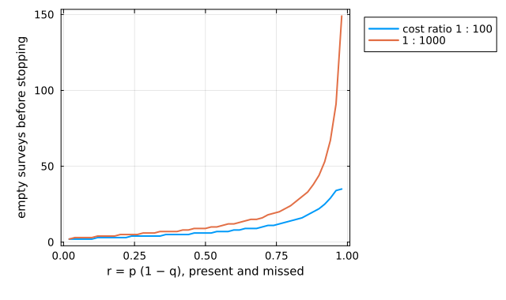
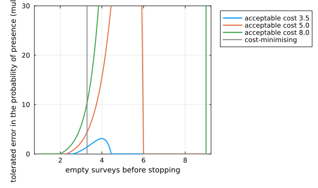

When to stop looking for an invasive plant (Regan et al. 2006; Rout et al. 2009)
Simon Frost
- About this case study
- The papers
- The rule of thumb
- The case study
- The dynamic programme
- How robust is the answer?
- What was not reproduced
- What to take from this
About this case study
This case study replicates two published analyses of one decision: after a weed has gone unseen, how many more empty surveys should be made before it is declared eradicated? The first paper gives a rule of thumb and a dynamic programme; the second asks how robust the answer is. The rule of thumb and the second paper’s numbers are reproduced exactly. Three things in the first paper are not: its results with discounting, the upper end of its range for the case study, and the size of one difference between its two methods. Each is shown below. The comparisons are in the test suite (test/fixtures/replications/regan2006_eradication.json, test/test_replications.jl).
The weed of the case study, Helenium amarum in Queensland, was declared eradicated in 1992 after five years without a sighting. It was found again at the site in 2007.
The papers
Regan, McCarthy, Baxter, Panetta and Possingham (2006), “Optimal eradication: when to stop looking for an invasive plant”, Ecology Letters 9(7):759–766, doi:10.1111/j.1461-0248.2006.00920.x.
Rout, Thompson and McCarthy (2009), “Robust decisions for declaring eradication of invasive species”, Journal of Applied Ecology 46(4):782–786, doi:10.1111/j.1365-2664.2009.01678.x.
Both are all rights reserved; only their formulas, parameter values and printed results are used here.
Decision. Each year in which the last survey found nothing: survey again, or stop and declare the plant eradicated.
Actions. stop (the baseline: no further surveying) or survey.
States. The plant is present, as adults or in the seed bank, or absent.
Movement. A plant that is present persists to the next year with probability p. Once absent it stays absent.
Information. A survey finds a plant that is present with probability q, and never reports one that is absent.
Outcome. Cost, in units of one annual survey. Stopping while the plant is present costs Ce, the expected cost of its escape and the damage it does. The papers work with the ratio of the two costs. For the case study Ce is the authors’ valuation, from the value of dairy production in south-east Queensland; nothing is valued by this package.
The rule of thumb
If stopping after n empty surveys, the first of them free, the expected cost is (n − 1) Cs + Ce rⁿ with r = p (1 − q), the chance that the plant is there and is missed. The paper minimises this.
using DecisionAnalysis
include(joinpath("..", "_common.jl"))
using Plots
# Expected cost of stopping after n empty surveys, in survey costs (equation 3), the
# n that minimises it, and the paper's formula for that n (equation 4).
nec(n, r, ratio) = (n - 1) + ratio * r^n
rule(r, ratio) = argmin(n -> nec(n, r, ratio), 1:3000)
formula(r, ratio) = log(-1 / (ratio * log(r))) / log(r)
md_table(["quantity", "paper", "this package"],
[["surveys, r = 0.1, cost ratio 1 : 100", 2, rule(0.1, 100)],
["surveys, r = 0.9, cost ratio 1 : 100", 22, rule(0.9, 100)],
["surveys, r = 0.1, cost ratio 1 : 1000", 3, rule(0.1, 1000)],
["surveys, r = 0.9, cost ratio 1 : 1000", 44, rule(0.9, 1000)],
["surveys, r = 0.99, cost ratio 1 : 1000", 230, rule(0.99, 1000)],
["r at which no survey is worth making, 1 : 1000", 0.999, exp(-1 / 1000)],
["the same, 1 : 2", "above 0.7", exp(-1 / 2)]]; digits=3)| quantity | paper | this package |
|---|---|---|
| surveys, r = 0.1, cost ratio 1 : 100 | 2 | 2 |
| surveys, r = 0.9, cost ratio 1 : 100 | 22 | 22 |
| surveys, r = 0.1, cost ratio 1 : 1000 | 3 | 3 |
| surveys, r = 0.9, cost ratio 1 : 1000 | 44 | 44 |
| surveys, r = 0.99, cost ratio 1 : 1000 | 230 | 230 |
| r at which no survey is worth making, 1 : 1000 | 0.999 | 0.999 |
| the same, 1 : 2 | above 0.7 | 0.607 |
The formula reaches zero at r = exp(−Cs / Ce): a plant so persistent or so hard to find that searching costs more than the escape it might prevent. For a ratio of 1 : 2 that is 0.607; the paper’s 0.7 is read from a figure drawn in steps of 0.1.
rs = 0.02:0.02:0.98
plot(rs, [rule(r, 100) for r in rs]; label="cost ratio 1 : 100",
xlabel="r = p (1 − q), present and missed", ylabel="empty surveys before stopping")
plot!(rs, [rule(r, 1000) for r in rs]; label="1 : 1000")
With discounting: not reproduced
The paper also discounts future costs at 5% a year, by its equations 5 and 6, and reports that this shortens the search: to between 2 and 5 surveys at 1 : 100, and between 2 and 15 at 1 : 1000.
# Equations 5 and 6 as printed: n − 1 surveys and the escape cost, both discounted.
discounted(n, r, ratio, d) = (1 - (1 + d)^-(n - 1)) / d + ratio * r^n / (1 + d)^n
discounted_rule(r, ratio) = argmin(n -> discounted(n, r, ratio, 0.05), 1:3000)
md_table(["r", "1 : 100, no discounting", "1 : 100, discounted", "1 : 1000, no discounting",
"1 : 1000, discounted"],
[Any[r, rule(r, 100), discounted_rule(r, 100), rule(r, 1000),
discounted_rule(r, 1000)] for r in 0.1:0.2:0.9]; digits=1)| r | 1 : 100, no discounting | 1 : 100, discounted | 1 : 1000, no discounting | 1 : 1000, discounted |
|---|---|---|---|---|
| 0.1 | 2 | 2 | 3 | 3 |
| 0.3 | 4 | 4 | 6 | 6 |
| 0.5 | 6 | 6 | 9 | 10 |
| 0.7 | 10 | 10 | 16 | 17 |
| 0.9 | 22 | 26 | 44 | 48 |
With the equations as printed, discounting lengthens the search: 26 surveys, not 5, at r = 0.9 and 1 : 100. Next year’s survey becomes cheaper, and the escape cost falls by the same factor every year, which does not favour stopping sooner. How the paper obtained shorter times is not determined.
The case study
# Table 1 of Regan et al.: lower, best and upper values.
const DETECTION = (lower=0.59, best=0.83, upper=0.95)
const PERSISTENCE = (lower=0.50, best=0.80, upper=0.90)
const RATIO = (lower=197, best=354, upper=1317)
missed(q, p) = PERSISTENCE[p] * (1 - DETECTION[q])
md_table(["parameters", "r", "paper", "this package"],
[["best estimates", missed(:best, :best), 3,
rule(missed(:best, :best), RATIO.best)],
["easiest: best detection, least persistence, lowest cost",
missed(:upper, :lower), "at least 2", rule(missed(:upper, :lower), RATIO.lower)],
["hardest: worst detection, most persistence, highest cost",
missed(:lower, :upper), "no more than 5",
rule(missed(:lower, :upper), RATIO.upper)],
["worst detection, least persistence, highest cost", missed(:lower, :lower),
"", rule(missed(:lower, :lower), RATIO.upper)]]; digits=3)| parameters | r | paper | this package |
|---|---|---|---|
| best estimates | 0.136 | 3 | 3 |
| easiest: best detection, least persistence, lowest cost | 0.025 | at least 2 | 2 |
| hardest: worst detection, most persistence, highest cost | 0.369 | no more than 5 | 7 |
| worst detection, least persistence, highest cost | 0.205 | 5 |
The best estimate, 3 surveys, and the lower end, 2, are the paper’s. The upper end is not: the hardest combination of the paper’s Table 1 gives 7 surveys, not 5. Five appears with the worst detection but the least persistent plant; the paper does not say which combination its “upper” is. This matters for the paper’s conclusion that stopping after five years “was a precautionary decision”: on its own ranges, five surveys could have been two too few.
The dynamic programme
The rule ignores that a survey may find the plant, after which the count starts again. The paper’s dynamic programme allows for that. It is the problem that adaptive_management solves, with the state moving and a survey as the experiment:
- the state is the plant’s status this year, before the survey;
stoppaysCeif the plant is present, and ends the matter;surveypays one survey cost, and shows the plant with probabilityqif it is there, after which it persists with probabilityp.
With two states the long-horizon method, method=:vectors, is exact. The paper does not state its horizon; 300 years are used.
const R = Rational{BigInt}
# The number of empty surveys after which stopping is first the best action, starting
# from a year in which the plant was seen.
function stops_after(p, q, ratio; years=300)
table = PayoffTable([:stop, :survey], [:present, :absent], R[-ratio 0; -1 -1])
moves = (; stop=R[0 0; 1 1], survey=R[p 0; 1-p 1]) # T[next, present]
seen = (; survey=Experiment(R[1-q 1; q 0]; signals=[:not_seen, :seen]))
start = R[p, 1 - p]
solved = adaptive_management(DecisionProblem(table, start; baseline=:stop), seen;
horizon=years, transitions=moves, depth=0,
passive=false, method=:vectors)
belief, surveys = start, 0
for left in years:-1:1
pieces = solved.value_function[left]
pieces.actions[argmax(pieces.vectors * belief)] == :stop && return surveys
surveys += 1
unseen = moves.survey * (belief .* R[1 - q, 1])
belief = unseen ./ sum(unseen)
end
return surveys
end
exact(x) = rationalize(BigInt, x; tol=1e-9)
md_table(["case study", "rule of thumb", "dynamic programme"],
[Any[label, rule(missed(q, p), RATIO[c]),
stops_after(exact(PERSISTENCE[p]), exact(DETECTION[q]), RATIO[c])]
for (label, q, p, c) in (("easiest", :upper, :lower, :lower),
("best estimates", :best, :best, :best),
("hardest", :lower, :upper, :upper))])| case study | rule of thumb | dynamic programme |
|---|---|---|
| easiest | 2 | 2 |
| best estimates | 3 | 4 |
| hardest | 7 | 9 |
For the best estimates the dynamic programme asks for one survey more than the rule, and for the hardest combination two more: nine empty surveys.
The paper compares the two methods at a cost ratio of 1 : 100 (its Fig.
- and says that when persistence is above 0.8 the rule underestimates
“by one or two surveys if the probability of detection is high (q = 0.95), and about five surveys if the probability of detection is very low (q = 0.05)”.
persistences = [8 // 10, 9 // 10, 95 // 100, 98 // 100]
md_table(["persistence", "q = 0.95: rule", "dynamic programme", "q = 0.05: rule",
"dynamic programme"],
[Any[Float64(p), rule(Float64(p * 5 // 100), 100), stops_after(p, 95 // 100, 100),
rule(Float64(p * 95 // 100), 100), stops_after(p, 5 // 100, 100)]
for p in persistences]; digits=2)| persistence | q = 0.95: rule | dynamic programme | q = 0.05: rule | dynamic programme |
|---|---|---|---|---|
| 0.8 | 2 | 2 | 12 | 12 |
| 0.9 | 2 | 3 | 18 | 18 |
| 0.95 | 2 | 3 | 23 | 25 |
| 0.98 | 2 | 3 | 28 | 29 |
The first statement is reproduced: one survey more at high detection. The second is not: at low detection the dynamic programme asks for at most two surveys more than the rule here, not about five. The paper does not state its horizon, nor how it counts the first survey in the comparison, and either could account for part of this.
The paper also notes that for a plant that almost never dies out the best course is not to search at all. The dynamic programme agrees, and shows that this depends on how far ahead one looks:
md_table(["persistence 0.99, cost ratio 1 : 100", "300 years", "600 years"],
[Any["empty surveys before stopping, q = 0.95",
stops_after(99 // 100, 95 // 100, 100),
stops_after(99 // 100, 95 // 100, 100; years=600)],
Any["empty surveys before stopping, q = 0.05",
stops_after(99 // 100, 5 // 100, 100),
stops_after(99 // 100, 5 // 100, 100; years=600)]])| persistence 0.99, cost ratio 1 : 100 | 300 years | 600 years |
|---|---|---|
| empty surveys before stopping, q = 0.95 | 2 | 0 |
| empty surveys before stopping, q = 0.05 | 0 | 0 |
How robust is the answer?
Rout et al. take the same model and ask what happens if the probability that the plant is still there, rᵈ after d empty surveys, is wrong. They treat d as a real number.
ratio = 354.55 # the cost ratio used by Rout et al.
r = 0.8 * (1 - 0.83)
optimum = formula(r, ratio)
md_table(["quantity", "paper (Rout et al.)", "this package"],
[["r", 0.136, r], ["cost-minimising number of surveys", 3.29, optimum],
["its expected cost, in survey costs", 2.79, nec(optimum, r, ratio)],
["1 / ln r", -0.5, 1 / log(r)]]; digits=3)| quantity | paper (Rout et al.) | this package |
|---|---|---|
| r | 0.136 | 0.136 |
| cost-minimising number of surveys | 3.29 | 3.289 |
| its expected cost, in survey costs | 2.79 | 2.79 |
| 1 / ln r | -0.5 | -0.501 |
Suppose the manager will accept a total expected cost of Nc. The robustness of stopping after d surveys is the largest proportional error in the probability of presence at which the cost still stays within Nc. The paper’s result (its equation 5) is that the most robust choice is d = Nc / Cs + 1 / ln r + 1.
robustness(d, limit) = (limit - (d - 1)) / (ratio * r^d) - 1
robust_optimal(limit) = limit + 1 / log(r) + 1
limits = [nec(optimum, r, ratio), 3.5, 4.0, 5.0, 6.0, 8.0]
md_table(["acceptable cost, in survey costs", "most robust number of surveys (equation 5)",
"the same, found by search",
"error in the probability that it tolerates (multiples of the estimate)"],
[Any[limit, robust_optimal(limit),
argmax(d -> robustness(d, limit), 1:0.001:20),
round(robustness(robust_optimal(limit), limit); digits=1)]
for limit in limits]; digits=2)| acceptable cost, in survey costs | most robust number of surveys (equation 5) | the same, found by search | error in the probability that it tolerates (multiples of the estimate) |
|---|---|---|---|
| 2.79 | 3.29 | 3.29 | 0 |
| 3.5 | 4 | 4 | 3.1 |
| 4 | 4.5 | 4.5 | 10.2 |
| 5 | 5.5 | 5.5 | 81.2 |
| 6 | 6.5 | 6.5 | 603.4 |
| 8 | 8.5 | 8.5 | 32673.8 |
ds = 1:0.05:9
plot(; xlabel="empty surveys before stopping", ylims=(0, 30),
ylabel="tolerated error in the probability of presence (multiples)")
for limit in (3.5, 5.0, 8.0)
plot!(ds, [max(robustness(d, limit), 0) for d in ds];
label="acceptable cost " * string(limit))
end
vline!([optimum]; linestyle=:dot, color=:grey, label="cost-minimising")
The first row of the table is the cost-minimising answer itself: it is the most robust choice only for a manager who will accept no more than the minimum cost, and it tolerates no error at all. Anyone willing to pay a little more should survey longer, and the formula for how much longer does not involve the cost of escape. The paper’s general conclusion follows: to be robust, survey at least as many times as the number that minimises the expected cost.
Five surveys, the number actually made, is the most robust choice for a manager willing to accept an expected cost of about 4.5 surveys, and tolerates a probability of presence many times larger than estimated:
accepted = 5 - 1 - 1 / log(r)
accepted, robustness(5, accepted)(4.501227909826118, 29.38527800543495)The plant came back all the same. Robustness to an error in one probability is not protection against every error in the model.
What was not reproduced
- The discounted results of Regan et al., shown above.
- The upper end of the range for the case study, five surveys.
- The size of the difference between the rule and the dynamic programme at low detection, “about five surveys”.
- The figures of both papers beyond the numbers quoted in their text, and the alternative models of uncertainty in the second paper’s Appendix S2, whose equations are not recoverable from the file.
What to take from this
- The rule of thumb and every number of the second paper are reproduced exactly: three surveys at the best estimates, and 3.29 as a real number at a cost of 2.79 surveys.
- On the paper’s own parameter ranges the answer runs from 2 to 7 surveys by the rule and up to 9 by the dynamic programme. Five surveys was not the cautious end of that range.
- The dynamic programme is
adaptive_managementwith a state that moves, and with two states it is solved exactly over centuries. - Every cost is in units of one survey, beside the baseline of stopping at once.